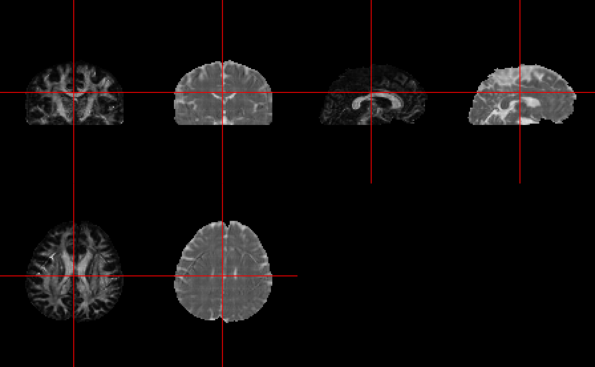

DTI Data in fslr
Resources and Goals
Much of this work has been adapted by the FSL guide for DTI: http://fsl.fmrib.ox.ac.uk/fsl/fslwiki/FDT/UserGuide. We will show you a few steps that have been implemented in fslr: eddy_correct and dtifit. Although xfibres has been adapted for fslr, which is the backend for bedpostx from FSL, it takes a long time to run and the results are not seen in this vignette, though code is given to illustrate how it would be run.
Data Location
The data located in this tutorial is located at http://cmic.cs.ucl.ac.uk/camino//uploads/Tutorials/example_dwi.zip. It contains 3 files:
-
4Ddwi_b1000.nii.gz- a 4D image of the DWI data. -
brain_mask.nii.gz- A brain mask of the DTI data -
grad_dirs.txt- a 3 column text file with the b-vectors as the first 3 columns. The b-values are either 0 or 1000 depending on the b-vector.
Reading in the Data
First, we download the data into a temporary directory the unzip it:
tdir = tempdir()
tfile = file.path(tdir, "example_dwi.zip")
download.file("http://cmic.cs.ucl.ac.uk/camino//uploads/Tutorials/example_dwi.zip",destfile = tfile)
out = unzip(zipfile = tfile, exdir = tdir, overwrite = TRUE)Making b-vectors and b-values
As dtifit requires the b-values and b-vectors to be separated, and this data has b-values of \(1000\) when the b-vectors is not zero. This is very important and you must know where your b-values and b-vectors are when doing your analyses and what units they are in.
library(fslr)## Loading required package: oro.nifti## oro.nifti 0.9.2## Loading required package: neurobaseb_data_file = grep("[.]txt$", out, value = TRUE)
b_vecs = read.delim2(b_data_file, header = FALSE)
b_vecs = as.matrix(b_vecs)
class(b_vecs) = "numeric"
We will read in the information of the b-values and b-vectors from the 1 file and separate them. Here, the b-values are all 1000, except for places where the b-vector is all zero.
b_vals = rep(1000, nrow(b_vecs))
all_zero = apply(b_vecs == 0, 1, all)
b_vals[all_zero] = 0
Checking our data
Here we ensure that the number of b-values/b-vectors is the same as the number of time points in the 4D image.
img = grep("4Ddwi_b1000", out, value = TRUE)
nim = readnii(img)
n_timepoints = dim(nim)[4]
stopifnot(nrow(b_vecs) == n_timepoints)Printing out FSL Version
if (have.fsl()) {
print(fsl_version())
}## [1] "5.0.10"Running eddy_correct
Here, we will run an eddy current correction using FSL’s eddy_correct through fslr. We will save the result in a temporary file (outfile), but also return the result as a nifti object ret, as retimg = TRUE. We will use the first volume as the reference as is the default in FSL. Note FSL is zero-indexed so the first volume is the zero-ith index:
if (have.fsl()) {
outfile = tempfile(fileext = ".nii.gz")
retimg = TRUE, reference_no = 0)
}## eddy_correct "/private/var/folders/1s/wrtqcpxn685_zk570bnx9_rr0000gr/T/RtmpkgND0G/4Ddwi_b1000.nii.gz" "/var/folders/1s/wrtqcpxn685_zk570bnx9_rr0000gr/T//RtmpkgND0G/filed2ffd92131" 0;Note, from here on forward we will use either the filename for the output of the eddy current correction or the eddy-current-corrected nifti object.
Running DTI Fitting as a cursor
Now that we have eddy current corrected our data, we can pass that result into dtifit to get FA maps and such:
if (have.fsl()) {
mask_fname = grep("mask", out, value = TRUE)
bvals = b_vals, mask = mask_fname)
}## dtifit --data="/private/var/folders/1s/wrtqcpxn685_zk570bnx9_rr0000gr/T/RtmpkgND0G/filed2f6df90396.nii.gz" --out="/var/folders/1s/wrtqcpxn685_zk570bnx9_rr0000gr/T//RtmpkgND0G/filed2f775aa541" --mask="/private/var/folders/1s/wrtqcpxn685_zk570bnx9_rr0000gr/T/RtmpkgND0G/brain_mask.nii.gz" --bvecs="/var/folders/1s/wrtqcpxn685_zk570bnx9_rr0000gr/T//RtmpkgND0G/filed2f60178b9e.txt" --bvals="/var/folders/1s/wrtqcpxn685_zk570bnx9_rr0000gr/T//RtmpkgND0G/filed2f29cf635b.txt" --verboseBy default, the result of dtifit is the filenames of the resultant images. Here we will read in those images:
if (have.fsl()) {
res_imgs = lapply(res, readnii)
}Plotting an FA map
Using the ortho2 function, you can plot the fractional anisotropy (FA) map
if (have.fsl()) {
ortho2(res_imgs$FA)
}
and the mean diffusivity (MD) map:
if (have.fsl()) {
ortho2(res_imgs$MD)
}
or both at the same time using the double_ortho function:
if (have.fsl()) {
double_ortho(res_imgs$FA, res_imgs$MD)
}
You can look at a scatterplot of the FA vs MD values of all values inside the mask using the following code:
if (have.fsl()) {
mask = readnii(mask_fname)
df = data.frame(FA = res_imgs$FA[ mask == 1], MD = res_imgs$MD[ mask == 1] )
plot(df)
}Fitting bedpostx
Accoriding to http://fsl.fmrib.ox.ac.uk/fsl/fslwiki/FDT/UserGuide, the bedpostx function from FSL stands for “Bayesian Estimation of Diffusion Parameters Obtained using Sampling Techniques. The X stands for modelling Crossing Fibres”. It also states “bedpostx takes about 15 hours to run”. We have implemented xfibres, the function bedpostx calls. Running it with the default options, the command would be:
xfibres(infile = outfile,
bvecs = b_vecs,
bvals = b_vals,
mask = mask_fname)We are currently implementing probtracx2 and an overall wrapper for all these functions to work as a pipeline.